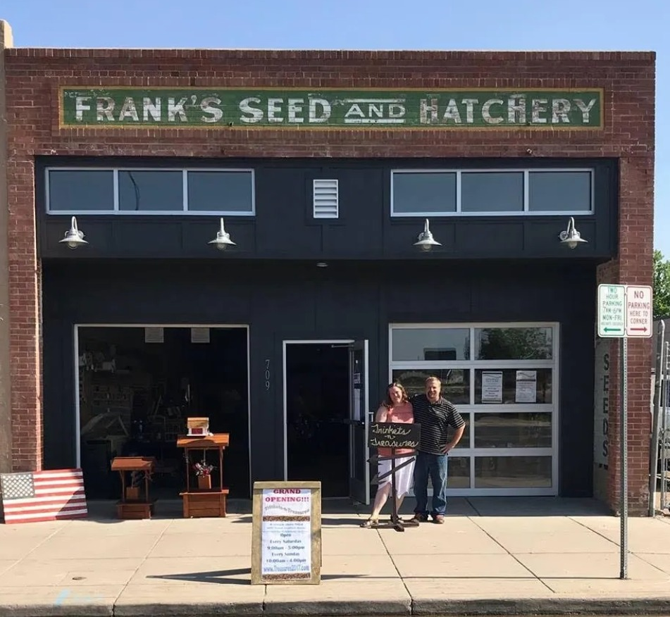
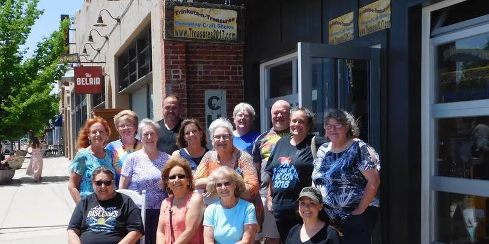

Trinkets-n-Treasures
In The Beginning . . .
We are just two regular people who share the same dream that's coming to life in the form of Trinkets-n-Treasures. Since about the first day we met, we've both enjoyed upcyling things, salvaging discarded materials and turning them into things people enjoy using, watching the creative talents of area crafters. After selling stainless steel necklace chain from spools for a couple of years, we hatched the idea of creating a brick and mortar location for area crafters.
Our dream now is to provide crafters with a physical location where they can base their sales operations, without having to risk large sums of money in starting their own shops. Our artists can use our store to set up meetings with their on and offline customers, recruit new regular customers, and more.
Buy Locally
All of our artists live in Northern Colorado with the majority of them from Weld County.
JUNE 8, 2019 - WE MADE IT A YEAR!
